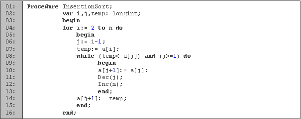

Metodo inserción
Es un algoritmo sencillo de entender y de codificar
Si el tamaño de la entrada es N, entonces el orden del tiempo de ejecución, para el peor caso es O(N2);
Si la entrada esta "casi ordenada", el algoritmo se ejecuta mucho más rápidamente.Esta velocidad tiende a un tiempo O(N), peor caso que se cumple cuando la entrada está totalmente ordenada
Es por la propiedad anterior que este algoritmo, a pesar de no ser el más rápido para entradas grandes, suele usarse de la siguiente manera: Se semi ordena la entrada con algún otro algoritmo más rápido y más adecuado para entradas grandes. Luego, cuando tenemos la entrada "casi ordenada" usamos este algoritmo. La velocidad de ejecución será muy buena por dos razones: su tiempo de ejecución tiende a O(N) con entradas "casi ordenadas" (lo cual es un tiempo excelente), y la simpleza de su implementación hará que se ejecute más rápido que otros algoritmos más complejos.
Explicación del algoritmo. Sea A el array a ordenar con N elementos. El algoritmo consiste en recorrer todo el array A comenzando desde la posición p=2 y terminando en p=N. Para cada p, se trata de ubicar en el lugar correcto el elemento A[p] en entre los elementos anteriores: A[p-1], A[p-2], ..., A[0].
Dada la posición actual p, el algoritmo se basa en que los elementos A[0], A[1], ..., A[p-1] ya están ordenados.
notas tomadas de Sebastian Gurin.